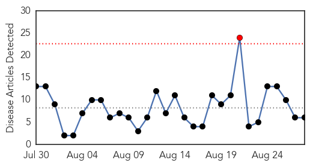
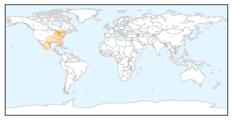
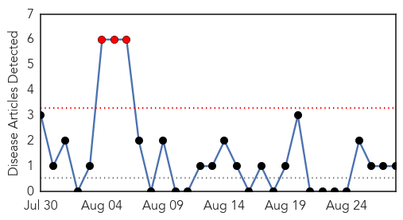
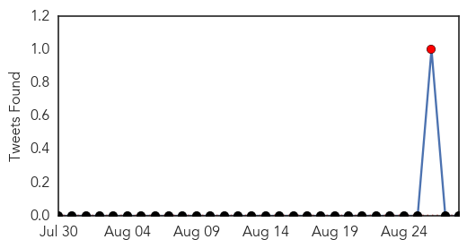

West Nile Virus
30-Day Web Trend
1 alerts, 0 warnings

30-Day Twitter Trend
0 alerts, 0 warnings

Article Locations
Article Confidences
Top Articles:
- 0.984
- Virus-carrying mosquitoes found in Goshen
- 0.975
- Case of West Nile reported in county
- 0.916
- EagleCountryOnline.com West Nile Virus Activity Increasing In The Hoosier State
- 0.896
- Three cases of West Nile virus confirmed in Baltimore city
- 0.818
- Pinellas man, 32, infected with West Nile virus
- 0.765
- 4 People in Texas Die from West Nile
Top Tweets:
-
No tweets found for Aug 28, 2015
Mumps
30-Day Web Trend
3 alerts, 0 warnings

30-Day Twitter Trend
1 alerts, 0 warnings

Article Locations

Article Confidences

Top Articles:
Top Tweets:
-
No tweets found for Aug 28, 2015